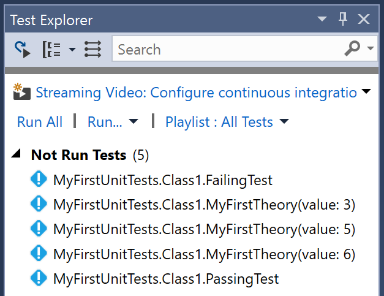
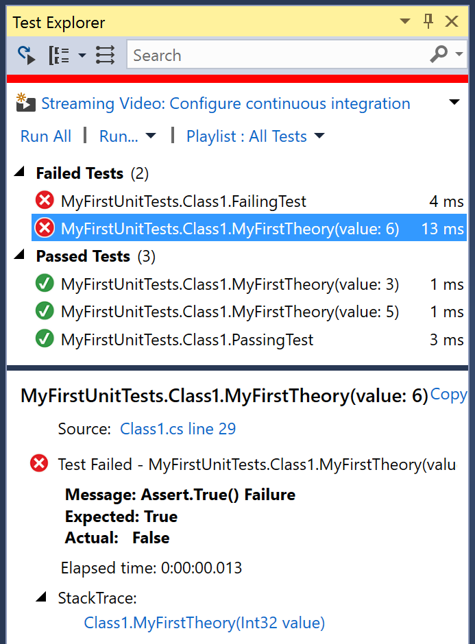

In this article, we will demonstrate getting started with xUnit.net and .NET Core, showing you how to write and run your first set of unit tests.
Note: The examples were done with xUnit.net v2.4.1, .NET Core SDK 2.2.103, and .NET Core 2.1. The version numbers, paths, and generated templates may differ for you, depending on which version you're using. Note that .NET Core 1.x and 2.x are supported.
As of this writing, the .NET SDK is available for
download for Windows,
Linux, and macOS. Once you've downloaded and installed the SDK, open a fresh
command prompt of your choice (CMD, PowerShell, Bash, etc.) and make sure
that you can access the CLI by typing dotnet --version. You
should be rewarded with a single line, describing the version of the
.NET Core SDK you have installed:
$ dotnet --version
2.2.103
Note: the first time you run the dotnet command, it may
perform some post-installation steps. Once these one-time actions are done,
it will execute your command.
An xUnit.net test project for .NET Core, just like other xUnit.net test projects for .NET, starts with a class library. From the command line, create a folder for your test project, change into it, and then create the project:
$ mkdir MyFirstUnitTests $ cd MyFirstUnitTests $ dotnet new classlib The template "Class library" was created successfully. Processing post-creation actions... Running 'dotnet restore' on ~/src/MyFirstUnitTests/MyFirstUnitTests.csproj... Restoring packages for ~/src/MyFirstUnitTests/MyFirstUnitTests.csproj... Generating MSBuild file ~/src/MyFirstUnitTests/obj/MyFirstUnitTests.csproj.nuget.g.props. Generating MSBuild file ~/src/MyFirstUnitTests/obj/MyFirstUnitTests.csproj.nuget.g.targets. Restore completed in 141.23 ms for ~/src/MyFirstUnitTests/MyFirstUnitTests.csproj. Restore succeeded.
The result of this project template creates a .NET Standard class library. We
actually want a .NET Core application (since we're writing .NET Core tests),
so open the generated .csproj file and edit it so that it looks
like this:
We've made two important changes here:
netcoreapp2.1, which means
that our tests will use .NET Core 2.1.x (whatever is the latest version
installed on our machine);
xunit and
xunit.runner.visualstudio. The former is the unit testing framework,
and the latter is the library that enables support for both command line and
Visual Studio execution.
Now let's verify that everything is working:
$ dotnet test
Build started, please wait...
Build completed.
Test run for ~/src/MyFirstUnitTests/bin/Debug/netcoreapp2.1/MyFirstUnitTests.dll(.NETCoreApp,Version=v2.1)
Microsoft (R) Test Execution Command Line Tool Version 15.9.0
Copyright (c) Microsoft Corporation. All rights reserved.
Starting test execution, please wait...
No test is available in ~/src/MyFirstUnitTests/bin/Debug/netcoreapp2.1/MyFirstUnitTests.dll. Make sure
that test discoverer & executors are registered and platform & framework version settings are appropriate
and try again.
Excellent! There were no unit tests to run, because we didn't write any yet. Let's do that now.
When you created the project, the project template automatically created a file
named Class1.cs. Using your favorite text editor, open this file
and add a couple tests:
Now let's go run the tests again and see what happens:
$ dotnet test Build started, please wait... Build completed. Test run for ~/src/MyFirstUnitTests/bin/Debug/netcoreapp2.1/MyFirstUnitTests.dll(.NETCoreApp,Version=v2.1) Microsoft (R) Test Execution Command Line Tool Version 15.9.0 Copyright (c) Microsoft Corporation. All rights reserved. Starting test execution, please wait... [xUnit.net 00:00:01.8833990] MyFirstUnitTests.Class1.FailingTest [FAIL] Failed MyFirstUnitTests.Class1.FailingTest Error Message: Assert.Equal() Failure Expected: 5 Actual: 4 Stack Trace: at MyFirstUnitTests.Class1.FailingTest() in ~/src/MyFirstUnitTests/Class1.cs:line 16 Total tests: 2. Passed: 1. Failed: 1. Skipped: 0. Test Run Failed. Test execution time: 3.9954 Seconds
Now that we've gotten your first unit tests to run, let's introduce one more way to write tests: using theories.
You may have wondered why your first unit tests use an attribute named
[Fact] rather than one with a more traditional name like Test.
xUnit.net includes support for two different major types of unit tests:
facts and theories. When describing the difference between facts and theories,
we like to say:
Facts are tests which are always true. They test invariant conditions.
Theories are tests which are only true for a particular set of data.
A good example of this testing numeric algorithms. Let's say you want to test an algorithm which determines whether a number is odd or not. If you're writing the positive-side tests (odd numbers), then feeding even numbers into the test would cause it fail, and not because the test or algorithm is wrong.
Let's add a theory to our existing facts (including a bit of bad data, so we can see it fail):
{% highlight C# %} [Theory] [InlineData(3)] [InlineData(5)] [InlineData(6)] public void MyFirstTheory(int value) { Assert.True(IsOdd(value)); } bool IsOdd(int value) { return value % 2 == 1; } {% endhighlight %}This time when we run our tests, we see a second failure, for our theory that was given 6:
Microsoft (R) Test Execution Command Line Tool Version 15.9.0 Copyright (c) Microsoft Corporation. All rights reserved. Starting test execution, please wait... [xUnit.net 00:00:00.5661695] MyFirstUnitTests.Class1.MyFirstTheory(value: 6) [FAIL] [xUnit.net 00:00:00.5701272] MyFirstUnitTests.Class1.FailingTest [FAIL] Failed MyFirstUnitTests.Class1.MyFirstTheory(value: 6) Error Message: Assert.True() Failure Expected: True Actual: False Stack Trace: at MyFirstUnitTests.Class1.MyFirstTheory(Int32 value) in ~/src/MyFirstUnitTests/Class1.cs:line 30 Failed MyFirstUnitTests.Class1.FailingTest Error Message: Assert.Equal() Failure Expected: 5 Actual: 4 Stack Trace: at MyFirstUnitTests.Class1.FailingTest() in ~/src/MyFirstUnitTests/Class1.cs:line 16 Total tests: 5. Passed: 3. Failed: 2. Skipped: 0. Test Run Failed. Test execution time: 4.0307 Seconds
Although we've only written 3 test methods, the test runner actually ran 5 tests; that's because each theory with its data set is a separate test. Note also that the runner tells you exactly which set of data failed, because it includes the parameter values in the name of the test.
These instructions below will work for Windows, but you must take additional steps to be able to support multi-targeting on non-Windows OSes. For more information, please see Getting Started with Multi-Targeting for non-Windows.
Sometimes, you want to write tests and ensure they run against several target
application platforms. The xUnit.net test runner that we've been using supports
.NET Core 1.0 or later, as well as Desktop .NET 4.5.2 or later. With a single
test project, we can have our tests run against multiple target frameworks.
Open the .csproj file and change this:
To this:
{% highlight xml %}
Note that in addition to adding a new target framework, we also renamed the
element from <TargetFramework> (singular) to
<TargetFrameworks>(plural). You can run against any
combination of .NET 4.5.2+ and/or .NET Core 1.0+, including multiple
desktop or .NET Core frameworks (for example, it's legal to have something like
<TargetFrameworks>net452;net461;net47;netcoreapp1.0;netcoreapp2.0;netcoreapp2.1</TargetFrameworks>).
Since we changed the .csproj file, we need to remember to re-run
dotnet restore before trying to run our unit tests. Now when
we run the tests, you can see that it runs both target frameworks, one after
another:
$ dotnet restore [...] $ dotnet test Build started, please wait... Build completed. Test run for ~/src/MyFirstUnitTests/bin/Debug/net452/MyFirstUnitTests.dll(.NETFramework,Version=v4.5.2) Microsoft (R) Test Execution Command Line Tool Version 15.9.0 Copyright (c) Microsoft Corporation. All rights reserved. Starting test execution, please wait... [xUnit.net 00:00:00.43] MyFirstUnitTests.Class1.MyFirstTheory(value: 6) [FAIL] [xUnit.net 00:00:00.44] MyFirstUnitTests.Class1.FailingTest [FAIL] Failed MyFirstUnitTests.Class1.MyFirstTheory(value: 6) Error Message: Assert.True() Failure Expected: True Actual: False Stack Trace: at MyFirstUnitTests.Class1.MyFirstTheory (System.Int32 value) [0x00008] in <ea38f081094e407290795149a3e20d66>:0 Failed MyFirstUnitTests.Class1.FailingTest Error Message: Assert.Equal() Failure Expected: 5 Actual: 4 Stack Trace: at MyFirstUnitTests.Class1.FailingTest () [0x0000a] in <ea38f081094e407290795149a3e20d66>:0 Total tests: 5. Passed: 3. Failed: 2. Skipped: 0. Test Run Failed. Test execution time: 0.9188 Seconds Test run for ~/src/MyFirstUnitTests/bin/Debug/netcoreapp2.1/MyFirstUnitTests.dll(.NETCoreApp,Version=v2.1) Microsoft (R) Test Execution Command Line Tool Version 15.9.0 Copyright (c) Microsoft Corporation. All rights reserved. Starting test execution, please wait... [xUnit.net 00:00:00.54] MyFirstUnitTests.Class1.MyFirstTheory(value: 6) [FAIL] [xUnit.net 00:00:00.54] MyFirstUnitTests.Class1.FailingTest [FAIL] Failed MyFirstUnitTests.Class1.MyFirstTheory(value: 6) Error Message: Assert.True() Failure Expected: True Actual: False Stack Trace: at MyFirstUnitTests.Class1.MyFirstTheory(Int32 value) in ~/src/MyFirstUnitTests/Class1.cs:line 30 Failed MyFirstUnitTests.Class1.FailingTest Error Message: Assert.Equal() Failure Expected: 5 Actual: 4 Stack Trace: at MyFirstUnitTests.Class1.FailingTest() in ~/src/MyFirstUnitTests/Class1.cs:line 16 Total tests: 5. Passed: 3. Failed: 2. Skipped: 0. Test Run Failed. Test execution time: 1.1002 Seconds
If you're having problems discovering or running tests, you may be a victim
of a corrupted runner cache inside Visual Studio. To clear this cache, shut down all instances
of Visual Studio, then delete the folder %TEMP%\VisualStudioTestExplorerExtensions.
Also make sure your solution is only linked against a single version of the Visual Studio runner
NuGet package (xunit.runner.visualstudio).
If you have Visual Studio Community (or a paid-for version of Visual Studio), you can run your xUnit.net tests within Visual Studio's built-in test runner (named Test Explorer). Unfortunately, this does not include Express editions of Visual Studio (you should upgrade to the free Community Edition instead).
Make sure Test Explorer is visible (go to Test > Windows > Test Explorer). Depending
on the version of Visual Studio you have, you may need to build your test assembly before tests
are discovered. After a moment of discovery, you should see the list of discovered tests:

Click the Run All link in the Test Explorer window, and you should see the results update
in the Test Explorer window as the tests are run:

You can click on a failed test to see the failure message, and the stack trace. You can click on the stack trace lines to take you directly to the failing line of code.